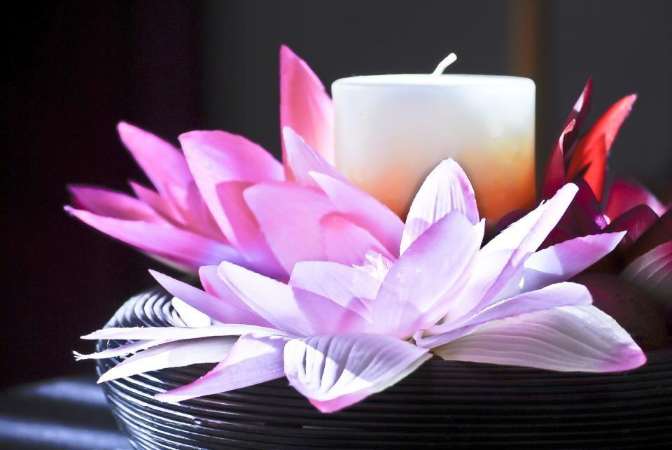
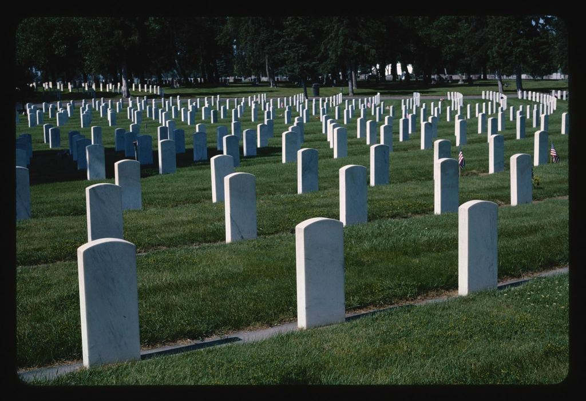
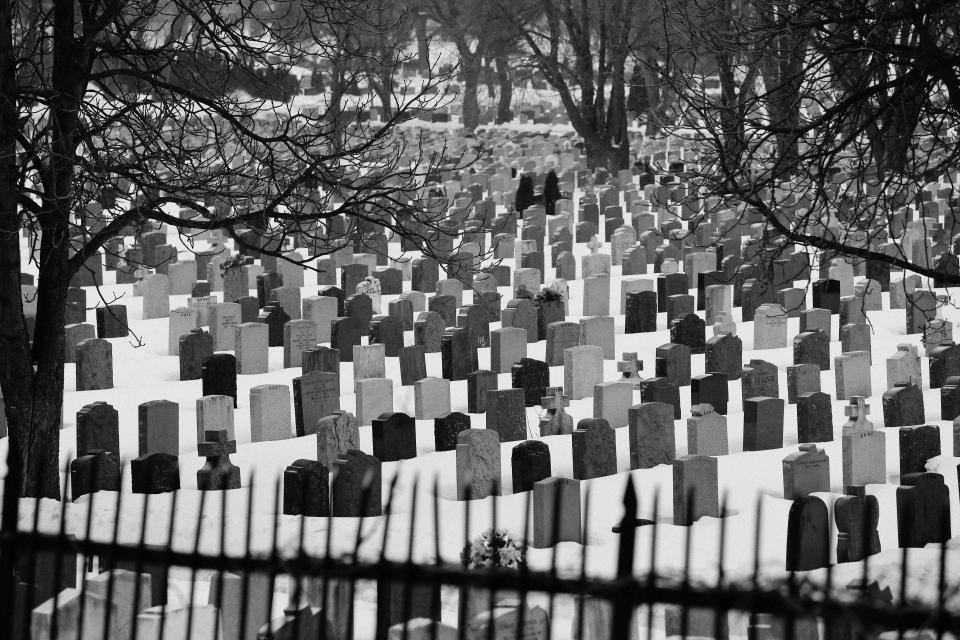

Vi kommer hem till er, var i länet ni bor
Sex personer, två bilar och ett län stort som Danmark. Vi gör hembesök i hela Jämtland utan extra kostnad och känner kyrkorna från Frösön till Hotagen.
Vi kör, ni sörjer
 Steg 1 / 4
Steg 1 / 4Ett samtal
Det är Lena eller Mats som svarar. Vi bestämmer när vi kan komma hem till er.
NästaVid köksbordet Steg 2 / 4
Steg 2 / 4Vid köksbordet
Vi kör ut till er och går igenom ceremoni, kyrka, kista och blommor i lugn och ro.
NästaBegravningsdagen
Steg 3 / 4Begravningsdagen
Vi är på plats i god tid, oavsett hur långt det är och hur mycket snö som kommit.
NästaGraven


Folk i byarna har alltid fått åka till stan för allt. När någon har dött ska de slippa. Det är vi som kör.
Från Åre till Frostviken
- Genomförd
 Åre · 2025
Åre · 2025Begravning i Åre gamla kyrka
- Genomförd
 Vallbo · 2025
Vallbo · 2025Fjällceremoni vid fäboden
- Genomförd
 Frostviken · 2025
Frostviken · 2025Samisk begravning
- Genomförd
 Ljungdalen · 2026
Ljungdalen · 2026Livesänd ceremoni i Ljungdalen
- Genomförd
 Hammerdal · 2024
Hammerdal · 2024Vinterceremoni och vårgravsättning
- Genomförd
 Hallen · 2024
Hallen · 2024Minnesstund i Hallens bygdegård

Avståndet ska aldrig kosta extra
En familj i Gäddede ska inte betala mer än en i Östersund. Därför ingår hembesök och körning till ceremonin i hela Jämtlands län. Vi har dessutom alltid snökedjor, spade och filtar i bilarna.
- 0 krför hembesök i länet
- 2delägare som själva svarar i telefon
- 1gravsättning i maj för vinterns begravningar

Sedan 1978 vid Storsjön
- 1978Året byrån startade i Brunflo
- 60+kyrkorVi har haft begravningar i
- 4 000milKörs varje år
- 0 krFör hembesök i länet

Auktoriserade sedan 1984
SBF-auktoriserade sedan 1984
Auktoriserad av Sveriges Begravningsbyråers Förbund sedan 1984.
Tydliga avtal
Avtal enligt de bestämmelser för begravningstjänster som tagits fram med Konsumentverket.
SBF-diplom
Lena och Mats har båda SBF:s diplom i begravningsrådgivning.
Avtal med pastoraten
Samarbetsavtal med Svenska kyrkans pastorat i Östersund, Krokom, Åre och Berg om tider och lokaler.

Vanliga frågor i fjällen
Hittar du inte svaret? Ring eller mejla oss.
01Kostar det något att ni kommer hem till oss?
Nej, hembesök och körning ingår i hela Jämtlands län. Utanför länet tar vi milersättning.
02Varför väntar man med gravsättningen på vintern?
Marken fryser ofta för djupt för att det ska gå att gräva. Kistan eller urnan förvaras då i kyrkans gravkor eller bårhus, och gravsättningen sker när tjälen gått ur.
03Kan vi ha en ceremoni utomhus på fjället?
Ja, borgerliga ceremonier kan hållas nästan var som helst. Spridning av aska utanför kyrkogård kräver tillstånd från länsstyrelsen, och vi hjälper er att söka.
04Hur fungerar livesändningen i glesbygd?
Vi tar med en egen 4G-router och antenn. Täckningen räcker i nästan alla kyrkor i länet – annars spelar vi in och skickar filmen samma kväll.
05Kan ni ordna en begravning enligt samisk tradition?
Vi har gjort det många gånger, men det är alltid familjen som bestämmer vad som ska ingå. Vi tar gärna hjälp av era egna kontakter och av präster som talar samiska.
06Är ni öppna på helger?
Kontoret är stängt, men Lena och Mats svarar i telefon alla dagar mellan 7 och 22.
Vill du att vi kommer hem till dig?
Skriv var du bor så ringer Lena eller Mats upp och bokar en tid.
